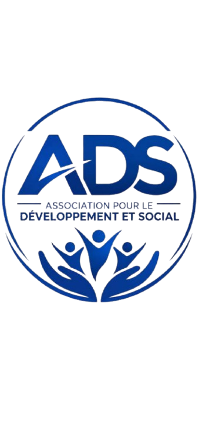

Association pour le Développement et Social
Née de la volonté d'une jeunesse du quartier, ADS rassemble, organise et agit pour un développement social durable .

Notre histoire
ADS — Association pour le Développement et Social — est le fruit d'une initiative portée par de jeunes habitants du quartier, convaincus qu'un avenir meilleur se construit d'abord localement. Réunis autour d'une même conviction, ils ont fondé un cadre pour organiser l'entraide, porter des projets concrets et donner une voix collective aux besoins du quartier.
Depuis sa création, l'association a mené des actions de terrain toujours dans un esprit de rigueur et de transparence. ADS reste fidèle à son idée fondatrice : rassembler les énergies d'un quartier pour qu'il grandisse par lui-même.
L'organisation
Une structure claire, pensée pour que chaque pôle de l'association fonctionne avec sérieux et cohérence.
Pilotage général de l'association, coordination des décisions et suivi des engagements pris envers le quartier.
Gestion transparente des ressources, suivi des cotisations et financement responsable de chaque projet.
Planification des activités, logistique de terrain et mobilisation des membres autour de chaque initiative.
Lien entre les pôles et le terrain, garant du bon déroulement des projets du premier au dernier jour.
Nos actions
Des initiatives concrètes, menées sur le terrain par les membres de l'association. Cliquez sur un projet pour voir la vidéo.
Nous rejoindre
Une question, une envie de vous engager ou de soutenir un projet ? Écrivez-nous ou retrouvez-nous sur les réseaux.